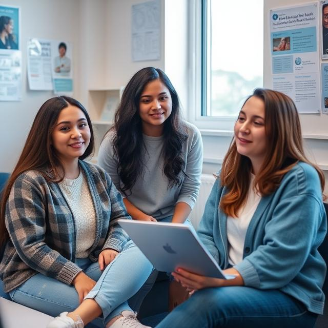

About us

The *Bachelor of Commerce in Computer Applications
(B.Com Computer Applications)*is a three-year
undergraduate program that combines commerce
and computer science.It is designed to provide
students with a foundation in both fields, preparing
them for careers in business and technology.
*Duration*: 3 years (6 semesters).
*Core Subjects*:
- Financial Accounting
- Business Economics
- Programming with C and C++
- Relational Database Management Systems (RDBMS)
- Business Statistics
- Advanced Accounting
- Computerized Accounting
*Elective Subjects*: Topics like Web Technologies,Java Programming,
Digital Marketing, and Machine Learning are often included.
*Career Opportunities*: Graduates can work as BusinessAnalysts,
App Developers, Computer Programmers, Auditors,or Business
Consultants in both public and private sectors.
Oru Vision
Our vision is a
community where all children feel loved,
respected and encouraged to develop to ther fullest potential
Our Mission
Our Mission is to provide quality education
of international standards and childcare in a safe and inclusive environment
thats builds a foundation for life long learning
Our moto
To educate all students to the height levels
of academic achievement,to enable them to reach and expand their potential